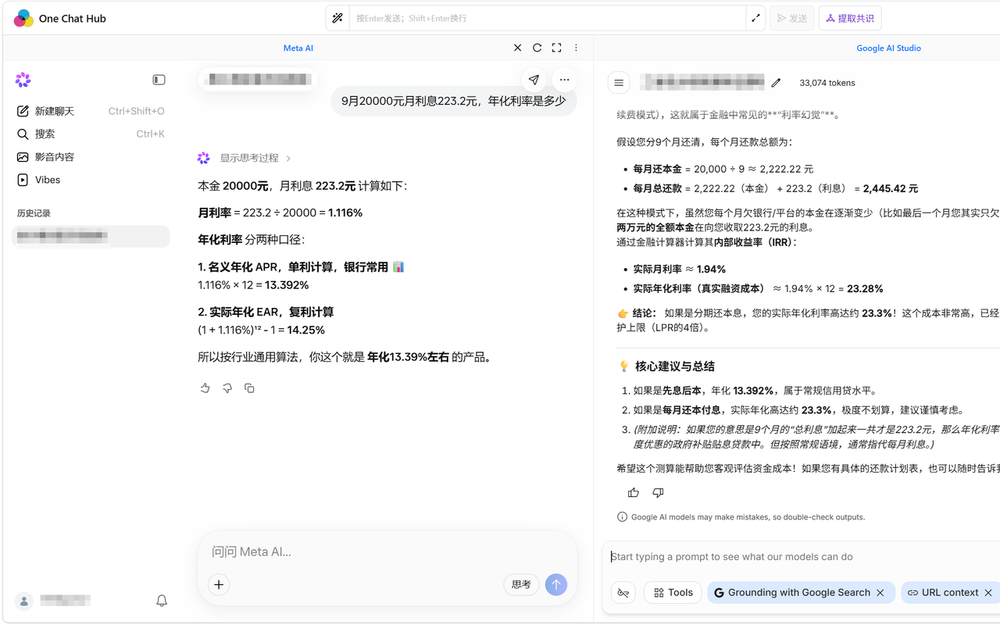
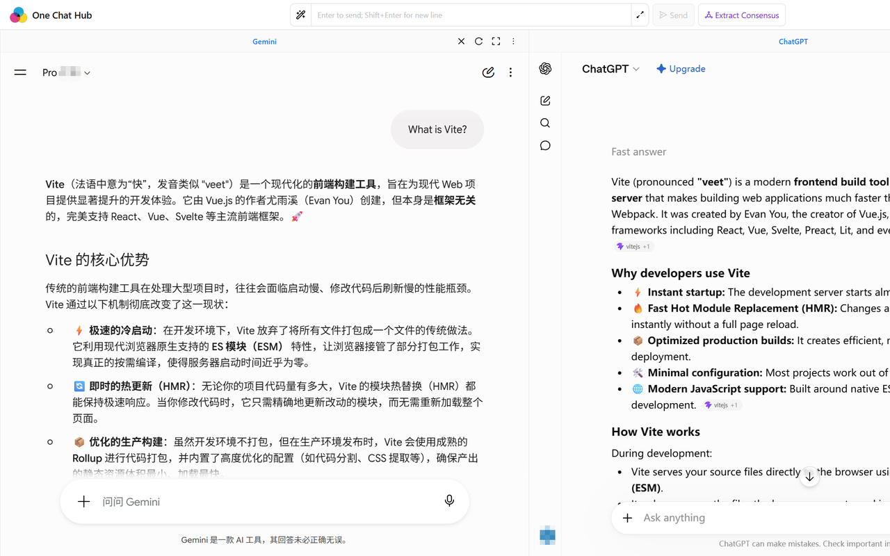

一次输入，多平台自动提交
内容脚本按每个平台配置的选择器找到输入框（inputButtonSelector 等），填入问题并触发提交； 对没有稳定发送按钮的平台，回退为回车提交。
完全免费 · 无需 API Key · 内置 22 个主流 AI 平台
Ask once. AI answers, side by side.
One Chat Hub 把多个 AI 网页装进同一个标签页：你在底部输入一次问题，扩展把内容自动填进各个平台的输入框并触发提交， 然后把它们的回答并排放在一起比较。用的是你自己已登录的网页账号，不需要 API Key，也不需要把内容交给任何第三方服务器。

下面每一项都是已实现的功能，未实现的设想不写在这里。
内容脚本按每个平台配置的选择器找到输入框（inputButtonSelector 等），填入问题并触发提交； 对没有稳定发送按钮的平台，回退为回车提交。
各平台在同一个页面里以多列布局同时显示，回答逐列并排，方便直接比较同题不同答。
多个平台给出回答后，点输入框旁的「提取共识」按钮，把各列回答汇总起来提炼共同结论，用多模型交叉验证代替逐列人工比对。
布局组件支持切换列数与排列方式，你按平台数量和自己屏幕宽度选择怎么排。
设置里有独立的词条库页面，可维护常用提示词，在输入时复用，避免每次重打长提示。
内置 22 个平台，但每个平台的 URL 都可以在设置里改。站点改版、换域名或你想用某个平台的其他入口时，不必等扩展更新。
设置里可配置快捷键，用来完成提交、切换等常用动作，减少来回点鼠标。
基于 i18next，构建产物内含 12 个语言目录（简中、繁中、英、日、韩、俄、德、法、西、阿、葡×2）。
打开的平台实例、平台地址覆盖、提示词相关配置都写入 chrome.storage 本地存储。 扩展不携带任何服务端，不会把对话内容上传。
国际 10 个、中国 12 个，共 22 个。
国际（10）
中国（12）
这些平台都需要你自己在浏览器里登录；扩展只负责把同一个问题分发过去并把页面并排展示。
下面两张图来自本项目构建产物 public/screenshots/，是扩展实际运行画面。

已上架 Chrome 应用商店与 Edge 加载项，点下面的卡片直接安装，更新由浏览器自动完成。